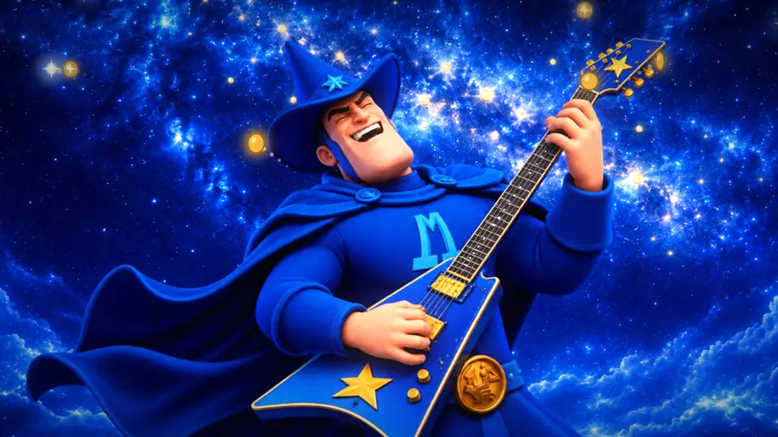

미리내맨 · 제작 과정
미디어는 메시지의 몸이다
이 영상은 곡을 받고 약 1시간 만에 나왔습니다. 빨리 나온 것보다 중요한 일이 두 번 있었습니다. 가사를 읽고 구상을 버린 일, 그리고 다 만든 뒤 박자가 틀렸다는 것을 재서 찾아낸 일입니다.
첫 구상은 가사를 읽지 않았다
첫 제안은 불편함을 어두운 실 매듭으로 그리고, 미리내맨이 은하수 선으로 푸는 이야기였습니다. 그림은 그럴듯했습니다. 그런데 가사 원문을 받아 보니 핵심이 다른 곳에 있었습니다.
"미리내고 간다네"는 은하수인 미리내와 돈을 미리 내고 간다는 말이 겹칩니다. "나눔의 히어로"가 그 뜻을 받칩니다. 이 영웅은 싸워서 해결하지 않습니다. 몰래 값을 치르고 윙크하며 떠납니다.
그래서 매듭을 버리고 구상을 다시 세웠습니다. 낸 금화가 별이 되고, 별이 모여 은하수가 됩니다. 곡 끝에 은하수가 지금까지 낸 금화였다는 것이 드러납니다. 은하수와 금화는 보기 좋으라고 고른 소재가 아니라 메시지가 화면에서 취한 몸입니다.
이 일로 제작 절차의 첫 단계를 바꿨습니다. 구상을 내기 전에 가사 원문과 전하려는 메시지부터 듣습니다.
곡을 악기별로 나누다
분리한 드럼, 베이스, 기타, 보컬의 세기입니다. 금화는 드럼과 기타 타격에 맞춰 튀어 오르고, 금빛 선은 기타를 따라 떨립니다.
구간별 평균을 표로 보기
다 만들고 나서 찾은 틀린 박자
첫 전곡은 분당 82.8박으로 만들었습니다. 파일은 재생됐고 그림도 좋았습니다. 그런데 확인하지 않은 것이 많다는 지적을 받고 드럼을 직접 재 보니, 박자 자체가 틀렸습니다.
82.8은 오탐실제 템포는 분당 103.5박입니다. 82.8은 정확히 그 5분의 4라서 자주 맞아떨어지는 함정이었습니다.
가사가 증명새 박자로 재니 가사 26줄이 모두 4박 마디에서 시작했습니다. 옛 박자에서는 맞지 않던 간격입니다.
컷 0.15초 지연일정한 템포의 곡에 구간별 위상 보정이 걸려, 일부 컷이 박자보다 늦었습니다. 보정을 껐습니다.
모든 컷, 가사, 카메라 이동을 맞는 박자로 다시 놓고 전곡을 다시 렌더링했습니다. 박자 측정 도구도 고쳐서, 지금은 이 곡에서 사람 입력 없이 103.5를 찾습니다.
감독 메모와 고친 것
측정은 어디가 어긋났는지 알려 줄 뿐이고, 무엇을 받아들일지는 사람이 정합니다. 아래 전후는 실제 옛 렌더에서 뽑았습니다.
-
최대한 할 수 있는 것을 다하고 보고를 해야지.
전 프레임을 검사하니 기타 솔로 도중 미리내맨이 2초쯤 화면에서 사라져 있었습니다. 편집표의 자세 번호 오류였습니다.
전 
후 -
사람이 전환할 때 뭉개지는 치명적인 단점이 있긴 하다.
앞선 작품에서 받은 지적입니다. 사람은 픽셀을 변형하지 않게 만들었지만, 전환이 길면 흐려진 두 그림이 겹쳐 보입니다. 이번에는 전환을 짧게 잡고, 얼굴이 크게 나오는 컷은 전환 없이 바로 이었습니다.
-
4K 렌더링 같은 거 하지 마. 1080p로 해.
전곡 렌더링을 줄이는 쪽으로 절차를 고쳤습니다. 출력은 1080p가 기본입니다. 4K와 업스케일은 요청이 있을 때만 합니다.
-
스킬 돌릴 때 그걸 물어보란 말이야.
더 부드럽게 만들 수 있느냐는 물음 끝에 나온 메모입니다. 자세 그림을 몇 장 쓸지는 비용과 질감의 선택입니다. 이제 그림을 그리기 전에 묻습니다.
달라진 숫자
| 항목 | 첫 전곡 | 완성본 |
|---|---|---|
| 박자(분당) | 82.8 | 103.5 |
| 가장 늦은 직접 컷의 어긋남 | 약 150ms(재렌더 전) | 30ms 이내 |
| 가장 큰 후렴의 화면 움직임 | 4.27 | 6.89 |
컷의 어긋남은 드럼에서 잰 103.5 박자 기준이고, 왼쪽 값은 위상 보정을 끄기 전 렌더에서 잰 값입니다. 움직임은 프레임 사이 평균 밝기 차이이며, 첫 전곡은 2:10~2:23, 완성본은 2:11~2:32 구간입니다. 구간이 같지 않으니 어림으로 봐 주세요.
아직 못 한 것
- 사람의 동작은 자세 그림 수만큼만 움직입니다. 부드럽게 이으려면 중간 자세를 더 그려야 합니다.
- 기타와 화면 전체 움직임의 상관은 0에 가깝습니다(-0.01). 금화와 금빛 선은 기타를 따르지만 화면 전체는 컷과 카메라가 좌우합니다.
- 킥 순간의 움직임은 평소보다 약 13% 큰 정도입니다.
- 합창으로 겹치는 가사 몇 줄은 음성 인식으로 글자까지 확인하지 못해, 시각만 마디와 음량으로 맞췄습니다.
쓴 것
- 음악
- 미리내맨
- 메시지·연출·판단
- 미리내맨
- 원화
- OpenAI gpt-image-2.6-flare, 표지 그림을 기준으로 생성
- 재구성·코드
- Claude Code · WebGL2, Canvas, SVG 경로
- 곡 분석
- Demucs 악기 분리, Whisper 가사 시각 확인
- 그림 처리
- Depth Anything V2 깊이 맵